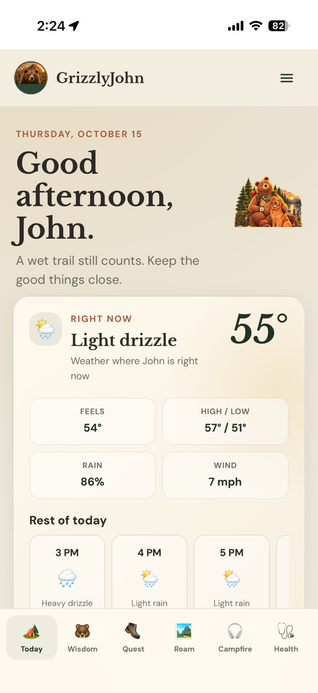
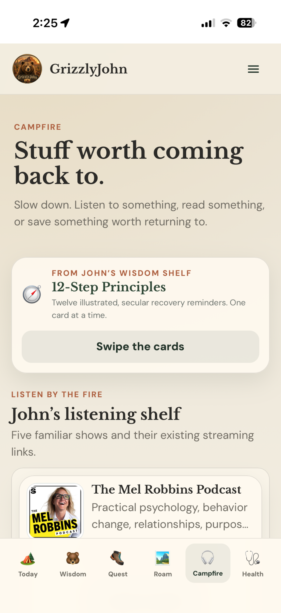
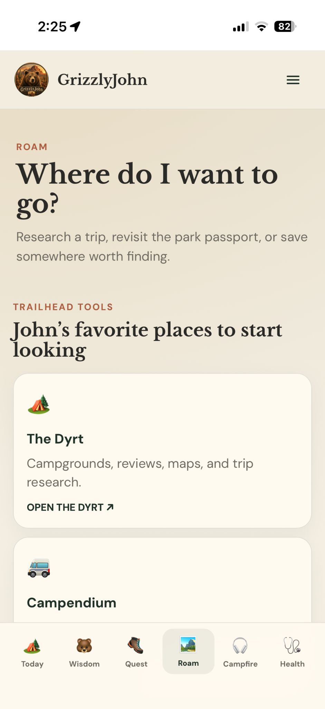
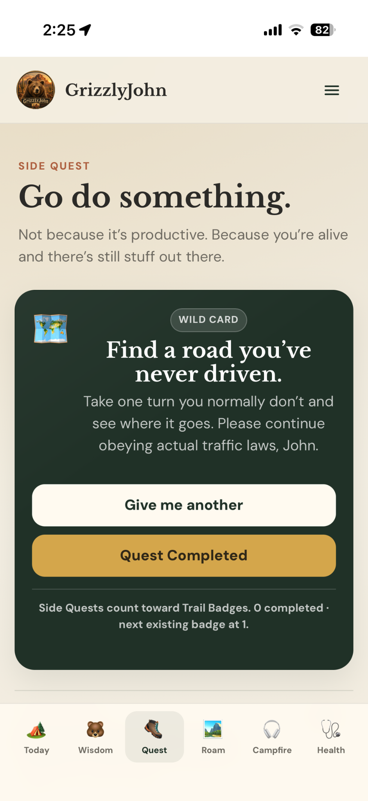

Product architecture
Define the problem, identify the useful behaviors, organize the experience, and decide what belongs in the first version.
A mobile-first web application designed around one actual human, then expanded through real use into a personalized system for daily context, reflection, curiosity, recovery, exploration, memory, and gentle reasons to return.
GrizzlyJohn is the portfolio proof my resume cannot fully show: I can move from human insight to product requirements to interface to working application, then keep improving it from actual behavior.

A real mobile-first application in use, not a concept mockup. The Today screen adapts to the day and gives the user useful context without turning life into a productivity dashboard.
The product problem
GrizzlyJohn was not designed from a generic persona. It was designed around one real user, his routines, interests, humor, recovery, places, media habits, and the kinds of prompts that might actually be useful on an ordinary Tuesday.
From MVP to living product
The first version was intentionally simple. Then the intended user actually used it. That changed the work. GrizzlyJohn expanded into richer daily tools, contextual weather, reflection and history, Side Quests, travel discovery, content shelves, lightweight personal tracking, and new interaction patterns because those additions had a reason to exist.
Start with what the person already values, returns to, talks about, and finds emotionally useful.
Translate those needs into a small number of clear behaviors instead of a giant everything-app.
Turn the concept into a functioning mobile-first web application using HTML, CSS, JavaScript, browser storage, and iterative interface work.
Watch what gets used voluntarily. Real return behavior tells me more than a feature checklist ever could.
Add the next useful layer only when behavior, feedback, or a real-life need gives it a reason to exist.
Working product
These are live product screens from the application itself. The visual system stays consistent while each part of the app supports a different user need.



What I can build
That is the capability I want this case study to make visible. My value is not limited to writing requirements or handing a concept to a developer. With AI-assisted development, I can participate much deeper in the actual product build.
Define the problem, identify the useful behaviors, organize the experience, and decide what belongs in the first version.
Build responsive interfaces and functioning product logic with HTML, CSS, JavaScript, browser storage, GitHub, and AI-assisted technical work.
Think through state, persistence, external data, device context, privacy choices, and how separate parts of the application need to work together.
Use real behavior and feedback to refine the experience, add useful capability, and avoid building features simply because they sound impressive.
What AI made possible
AI shortened the distance between "this would help" and "this now exists." It gave me a technical collaborator for implementation, debugging, structure decisions, experimentation, and rapid iteration while I stayed responsible for the product judgment.
Accelerate HTML, CSS, JavaScript, debugging, refactoring, and the practical work of turning product ideas into functioning features.
Test more versions, compare interaction patterns, refine responsive behavior, and improve the experience without waiting for a separate development cycle.
Work through data structures, state, feature relationships, privacy choices, and edge cases that sit behind the visible screen.
Define the problem, decide what belongs, evaluate the output, test whether it actually works, and choose what happens next.
What this proves
The app is organized around motivations, habits, friction, and return reasons rather than technology for technology's sake.
I can move past the brief and into a functioning application with real interface states, stored data, responsive behavior, and working interactions.
The intended user returns to the product and enjoys using it. That matters more to me than building a long feature list nobody asked for.
AI lets me cross more of the distance between strategy, systems thinking, product design, and technical execution myself.
I still bring the marketing automation, CRM, lifecycle, data, sales, psychology, and systems experience. Now I can also use that context to design and build working tools around the problem. I do not have to stop at "someone should make this." I can start making it.
GrizzlyJohn gives me a direct view of the full product loop: understand a human need, shape a useful concept, build the application, ship it, observe real use, and keep improving it. That is a fundamentally different level of technical leverage than my job titles alone suggest.